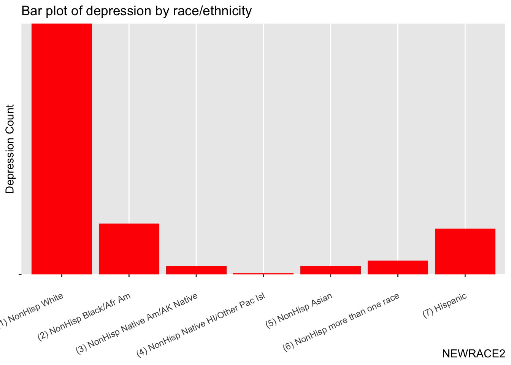
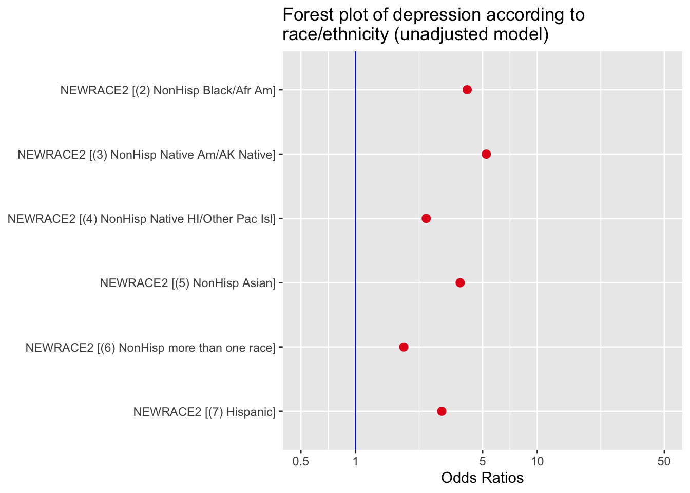
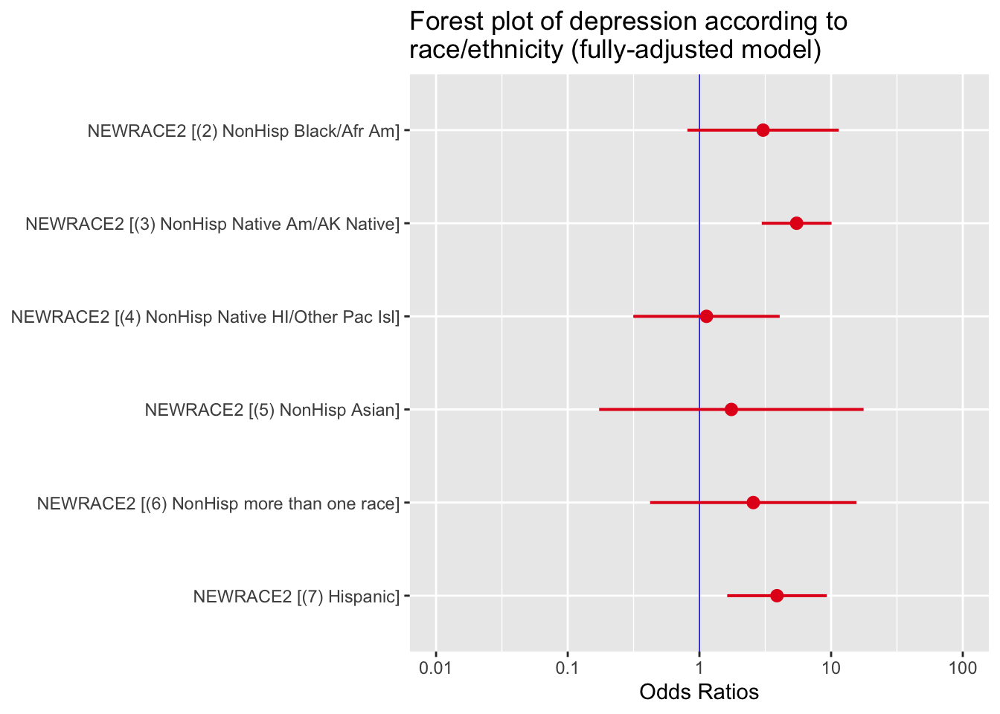
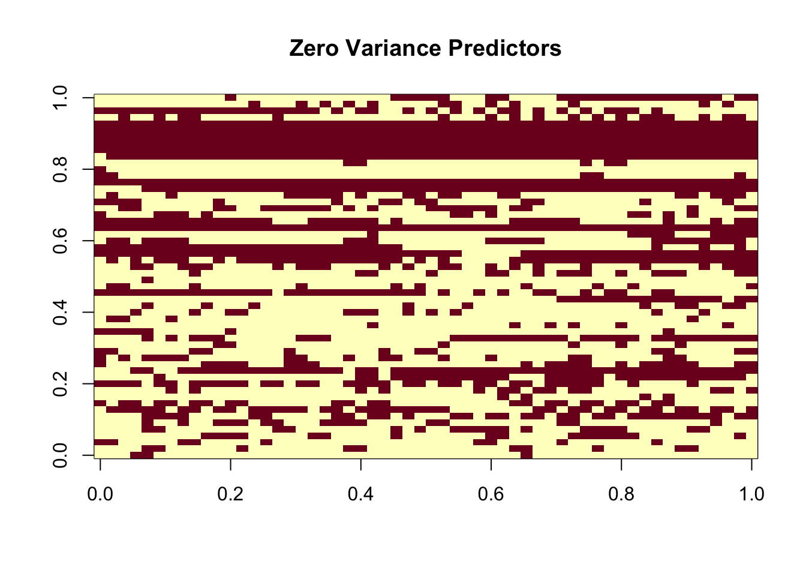
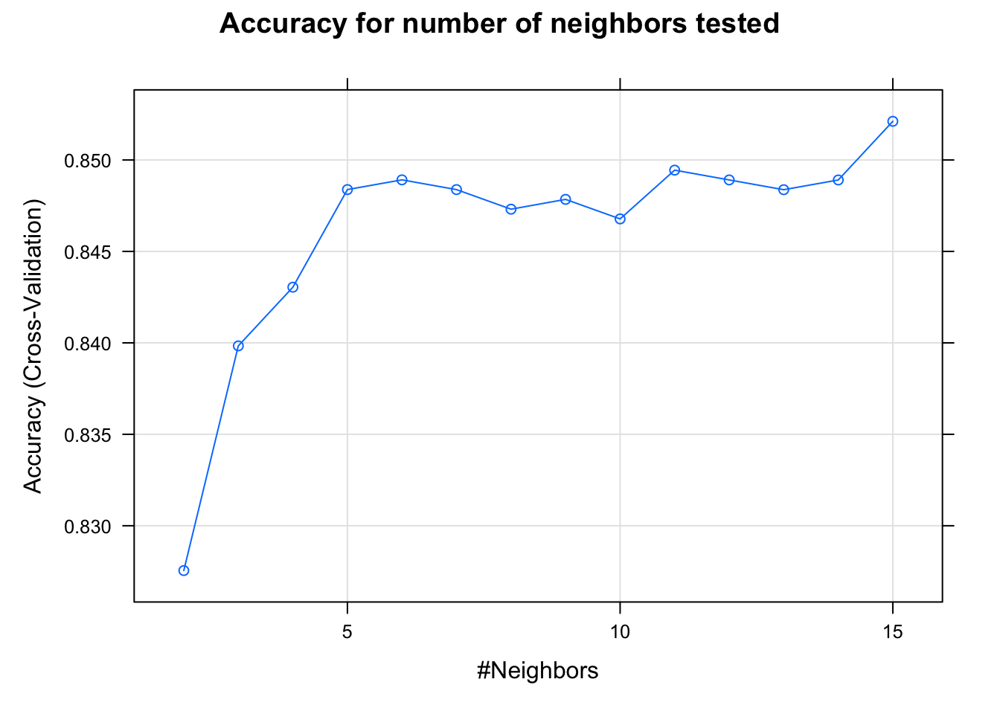
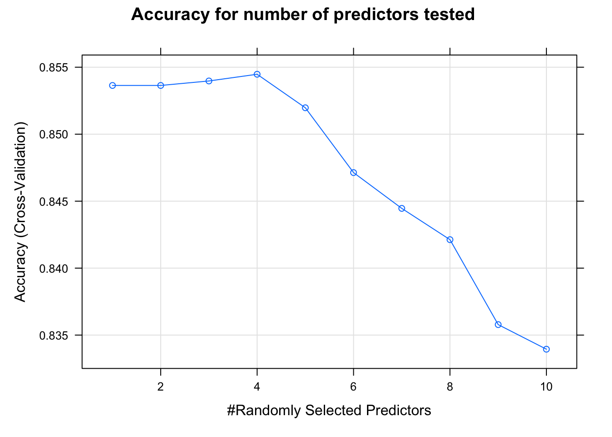
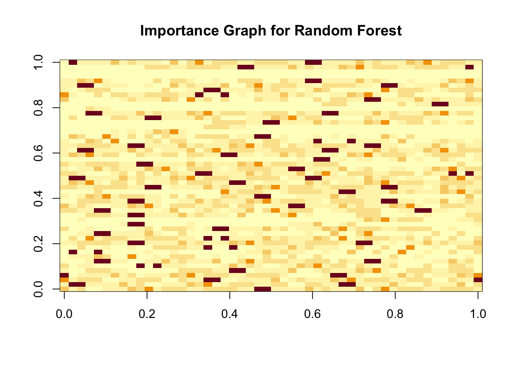

#Load in data and packages
load("/Users/jesse/Downloads/ICPSR_36361/DS0001/36361-0001-Data.rda")
library(tidyverse)## ── Attaching packages ─────────────────────────────────────── tidyverse 1.3.2 ──
## ✔ ggplot2 3.4.0 ✔ purrr 0.3.5
## ✔ tibble 3.1.8 ✔ dplyr 1.0.10
## ✔ tidyr 1.2.1 ✔ stringr 1.5.0
## ✔ readr 2.1.3 ✔ forcats 0.5.2
## ── Conflicts ────────────────────────────────────────── tidyverse_conflicts() ──
## ✖ dplyr::filter() masks stats::filter()
## ✖ dplyr::lag() masks stats::lag()library(dslabs)
library(caret)## Loading required package: lattice
##
## Attaching package: 'caret'
##
## The following object is masked from 'package:purrr':
##
## lift#Exploring data
data<- da36361.0001
#Exploring outcome var
unique(data$AMDEYR)## [1] (2) AMDELT=1 & ADPB2WK=2 (1) Yes (AMDELT=1 & ADPB2WK=1)
## [3] <NA>
## Levels: (1) Yes (AMDELT=1 & ADPB2WK=1) (2) AMDELT=1 & ADPB2WK=2#Need to make sure its a factor for regression and classification
levels(data$AMDEYR) ## [1] "(1) Yes (AMDELT=1 & ADPB2WK=1)" "(2) AMDELT=1 & ADPB2WK=2"summary(data$AMDEYR)## (1) Yes (AMDELT=1 & ADPB2WK=1) (2) AMDELT=1 & ADPB2WK=2
## 3186 38019
## NA's
## 14066#Renaming outcome var
levels(data$AMDEYR) <- c("Yes", "No")
#Checking it went through
summary(data$AMDEYR)## Yes No NA's
## 3186 38019 14066#Checking our independent variable
class(data$NEWRACE2)## [1] "factor"levels(data$NEWRACE2)## [1] "(1) NonHisp White" "(2) NonHisp Black/Afr Am"
## [3] "(3) NonHisp Native Am/AK Native" "(4) NonHisp Native HI/Other Pac Isl"
## [5] "(5) NonHisp Asian" "(6) NonHisp more than one race"
## [7] "(7) Hispanic"summary(data$NEWRACE2)## (1) NonHisp White (2) NonHisp Black/Afr Am
## 33534 6693
## (3) NonHisp Native Am/AK Native (4) NonHisp Native HI/Other Pac Isl
## 907 299
## (5) NonHisp Asian (6) NonHisp more than one race
## 2355 1959
## (7) Hispanic
## 9524#Preprocessing
#Drop AGE<18 categories
`%notin%` <- Negate(`%in%`)
data_prac <- data[data$AGE2 %notin% c("(01) Respondent is 12 years old", "(02) Respondent is 13 years old", "(03) Respondent is 14 years old", "(04) Respondent is 15 years old", "(05) Respondent is 16 years old", "(06) Respondent is 17 years old"), ]
data_prac <- data[data$EDUCCAT2 %notin% c("(5) 12 to 17 year olds (AGE2<=6)"), ]
#Checking it all went through
data_prac$AGE2 <- factor(data_prac$AGE2)
levels(data_prac$AGE2)## [1] "(07) Respondent is 18 years old"
## [2] "(08) Respondent is 19 years old"
## [3] "(09) Respondent is 20 years old"
## [4] "(10) Respondent is 21 years old"
## [5] "(11) Respondent is 22 or 23 years old"
## [6] "(12) Respondent is 24 or 25 years old"
## [7] "(13) Respondent is between 26 and 29 years old"
## [8] "(14) Respondent is between 30 and 34 years old"
## [9] "(15) Respondent is between 35 and 49 years old"
## [10] "(16) Respondent is between 50 and 64 years old"
## [11] "(17) Respondent is 65 years old or older"data_prac$EDUCCAT2 <- factor(data_prac$EDUCCAT2)
levels(data_prac$EDUCCAT2)## [1] "(1) Less than high school (IREDUC2<=7 and AGE2>=7)"
## [2] "(2) High school graduate (IREDUC2=8 and AGE2>=7)"
## [3] "(3) Some college (IREDUC2=9-10 and AGE2>=7)"
## [4] "(4) College graduate (IREDUC2=11 and AGE2>=7)"#Refactoring levels of AGE
library(plyr)## ------------------------------------------------------------------------------## You have loaded plyr after dplyr - this is likely to cause problems.
## If you need functions from both plyr and dplyr, please load plyr first, then dplyr:
## library(plyr); library(dplyr)## ------------------------------------------------------------------------------##
## Attaching package: 'plyr'## The following objects are masked from 'package:dplyr':
##
## arrange, count, desc, failwith, id, mutate, rename, summarise,
## summarize## The following object is masked from 'package:purrr':
##
## compactdata_prac$AGE2 <- revalue(data_prac$AGE2, c("(07) Respondent is 18 years old" = "(1) Respondent is 18 years old", '(08) Respondent is 19 years old' = '(2) Respondent is 19 years old', '(09) Respondent is 20 years old' = '(3) Respondent is 20 years old', '(10) Respondent is 21 years old'='(4) Respondent is 21 years old', '(11) Respondent is 22 or 23 years old'='(5) Respondent is 22 or 23 years old', '(12) Respondent is 24 or 25 years old'='(6) Respondent is 24 or 25 years old', '(13) Respondent is between 26 and 29 years old'='(7) Respondent is between 26 and 29 years old', '(14) Respondent is between 30 and 34 years old' = '(8) Respondent is between 30 and 34 years old', '(15) Respondent is between 35 and 49 years old'= '(9) Respondent is between 35 and 49 years old', '(16) Respondent is between 50 and 64 years old'='(10) Respondent is between 50 and 64 years old', '(17) Respondent is 65 years old or older'= '(11) Respondent is 65 years old or older'))
#Checking it went through
levels(data_prac$AGE2)## [1] "(1) Respondent is 18 years old"
## [2] "(2) Respondent is 19 years old"
## [3] "(3) Respondent is 20 years old"
## [4] "(4) Respondent is 21 years old"
## [5] "(5) Respondent is 22 or 23 years old"
## [6] "(6) Respondent is 24 or 25 years old"
## [7] "(7) Respondent is between 26 and 29 years old"
## [8] "(8) Respondent is between 30 and 34 years old"
## [9] "(9) Respondent is between 35 and 49 years old"
## [10] "(10) Respondent is between 50 and 64 years old"
## [11] "(11) Respondent is 65 years old or older"#Making dummy variables out of the predictors
predictors <- data_prac|> select(AGE2, IRSEX, INCOME, EDUCCAT2, WRKEDYR, ALCDAYS, CIG30USE, LIFANXD, LIFDIAB, LIFHBP)
#Find class of all predictors
sapply(predictors, class)## AGE2 IRSEX INCOME EDUCCAT2 WRKEDYR ALCDAYS CIG30USE LIFANXD
## "factor" "factor" "factor" "factor" "factor" "numeric" "numeric" "factor"
## LIFDIAB LIFHBP
## "factor" "factor"#Data frame of factor predictors
predictors_factors<- data_prac|> select(NEWRACE2, AGE2, IRSEX, INCOME, EDUCCAT2, WRKEDYR, LIFANXD, LIFDIAB, LIFHBP)
#Levels of factor predictors
sapply(predictors_factors, levels)## $NEWRACE2
## [1] "(1) NonHisp White" "(2) NonHisp Black/Afr Am"
## [3] "(3) NonHisp Native Am/AK Native" "(4) NonHisp Native HI/Other Pac Isl"
## [5] "(5) NonHisp Asian" "(6) NonHisp more than one race"
## [7] "(7) Hispanic"
##
## $AGE2
## [1] "(1) Respondent is 18 years old"
## [2] "(2) Respondent is 19 years old"
## [3] "(3) Respondent is 20 years old"
## [4] "(4) Respondent is 21 years old"
## [5] "(5) Respondent is 22 or 23 years old"
## [6] "(6) Respondent is 24 or 25 years old"
## [7] "(7) Respondent is between 26 and 29 years old"
## [8] "(8) Respondent is between 30 and 34 years old"
## [9] "(9) Respondent is between 35 and 49 years old"
## [10] "(10) Respondent is between 50 and 64 years old"
## [11] "(11) Respondent is 65 years old or older"
##
## $IRSEX
## [1] "(1) Male" "(2) Female"
##
## $INCOME
## [1] "(1) Less than $20,000" "(2) $20,000 - $49,999" "(3) $50,000 - $74,999"
## [4] "(4) $75,000 or More"
##
## $EDUCCAT2
## [1] "(1) Less than high school (IREDUC2<=7 and AGE2>=7)"
## [2] "(2) High school graduate (IREDUC2=8 and AGE2>=7)"
## [3] "(3) Some college (IREDUC2=9-10 and AGE2>=7)"
## [4] "(4) College graduate (IREDUC2=11 and AGE2>=7)"
##
## $WRKEDYR
## [1] "(1) Yes" "(2) No"
##
## $LIFANXD
## [1] "(1) Response entered" "(6) Response not entered"
##
## $LIFDIAB
## [1] "(1) Response entered" "(6) Response not entered"
##
## $LIFHBP
## [1] "(1) Response entered" "(6) Response not entered"#Transform factor predictors to categorical
library(fastDummies)
data_dummy<- data_prac
data_dummy<- data_dummy[!is.na(data_dummy$AMDEYR),]
data_dummy<- data_dummy[!is.na(data_dummy$NEWRACE2),]
data_dummy<- data_dummy[!is.na(data_dummy$AGE2),]
data_dummy<- data_dummy[!is.na(data_dummy$IRSEX),]
data_dummy<- data_dummy[!is.na(data_dummy$INCOME),]
data_dummy<- data_dummy[!is.na(data_dummy$EDUCCAT2),]
data_dummy<- data_dummy[!is.na(data_dummy$WRKEDYR),]
data_dummy<- data_dummy[!is.na(data_dummy$LIFANXD),]
data_dummy<- data_dummy[!is.na(data_dummy$LIFHBP),]
data_dummy<- dummy_cols(data_dummy, select_columns= c("NEWRACE2", "AGE2", "IRSEX", "INCOME", "EDUCCAT2", "WRKEDYR", "LIFANXD", "LIFDIAB", "LIFHBP"),ignore_na=TRUE)
#Barplot
library(ggplot2)
ggplot(data_dummy, aes(x=NEWRACE2, y=AMDEYR)) +geom_bar(stat="identity", fill="red") + ggtitle("Bar plot of depression by race/ethnicity")+ theme(axis.text.x = element_text(angle = 25, vjust = 0.8, hjust=1))+ylab("Depression Count") + theme(axis.title.x = element_text(hjust=1)) + theme(axis.text.y=element_blank()) 
#Table 1
library(tableone)
vars<- c("NEWRACE2", "AGE2", "IRSEX", "INCOME", "EDUCCAT2", "WRKEDYR", "LIFANXD", "LIFDIAB", "LIFHBP")
tableOne <- CreateTableOne(vars = vars, strata = c("NEWRACE2"), data = data_dummy)
tableOne## Stratified by NEWRACE2
## (1) NonHisp White
## n 4982
## NEWRACE2 (%)
## (1) NonHisp White 4982 (100.0)
## (2) NonHisp Black/Afr Am 0 ( 0.0)
## (3) NonHisp Native Am/AK Native 0 ( 0.0)
## (4) NonHisp Native HI/Other Pac Isl 0 ( 0.0)
## (5) NonHisp Asian 0 ( 0.0)
## (6) NonHisp more than one race 0 ( 0.0)
## (7) Hispanic 0 ( 0.0)
## AGE2 (%)
## (1) Respondent is 18 years old 169 ( 3.4)
## (2) Respondent is 19 years old 123 ( 2.5)
## (3) Respondent is 20 years old 119 ( 2.4)
## (4) Respondent is 21 years old 100 ( 2.0)
## (5) Respondent is 22 or 23 years old 239 ( 4.8)
## (6) Respondent is 24 or 25 years old 207 ( 4.2)
## (7) Respondent is between 26 and 29 years old 233 ( 4.7)
## (8) Respondent is between 30 and 34 years old 328 ( 6.6)
## (9) Respondent is between 35 and 49 years old 786 ( 15.8)
## (10) Respondent is between 50 and 64 years old 896 ( 18.0)
## (11) Respondent is 65 years old or older 1782 ( 35.8)
## IRSEX = (2) Female (%) 3095 ( 62.1)
## INCOME (%)
## (1) Less than $20,000 1492 ( 29.9)
## (2) $20,000 - $49,999 1775 ( 35.6)
## (3) $50,000 - $74,999 731 ( 14.7)
## (4) $75,000 or More 984 ( 19.8)
## EDUCCAT2 (%)
## (1) Less than high school (IREDUC2<=7 and AGE2>=7) 822 ( 16.5)
## (2) High school graduate (IREDUC2=8 and AGE2>=7) 1754 ( 35.2)
## (3) Some college (IREDUC2=9-10 and AGE2>=7) 1356 ( 27.2)
## (4) College graduate (IREDUC2=11 and AGE2>=7) 1050 ( 21.1)
## WRKEDYR = (2) No (%) 3769 ( 75.7)
## LIFANXD = (6) Response not entered (%) 3644 ( 73.1)
## LIFDIAB = (6) Response not entered (%) 4213 ( 84.6)
## LIFHBP = (6) Response not entered (%) 3009 ( 60.4)
## Stratified by NEWRACE2
## (2) NonHisp Black/Afr Am
## n 986
## NEWRACE2 (%)
## (1) NonHisp White 0 ( 0.0)
## (2) NonHisp Black/Afr Am 986 (100.0)
## (3) NonHisp Native Am/AK Native 0 ( 0.0)
## (4) NonHisp Native HI/Other Pac Isl 0 ( 0.0)
## (5) NonHisp Asian 0 ( 0.0)
## (6) NonHisp more than one race 0 ( 0.0)
## (7) Hispanic 0 ( 0.0)
## AGE2 (%)
## (1) Respondent is 18 years old 55 ( 5.6)
## (2) Respondent is 19 years old 37 ( 3.8)
## (3) Respondent is 20 years old 31 ( 3.1)
## (4) Respondent is 21 years old 25 ( 2.5)
## (5) Respondent is 22 or 23 years old 69 ( 7.0)
## (6) Respondent is 24 or 25 years old 50 ( 5.1)
## (7) Respondent is between 26 and 29 years old 52 ( 5.3)
## (8) Respondent is between 30 and 34 years old 67 ( 6.8)
## (9) Respondent is between 35 and 49 years old 205 ( 20.8)
## (10) Respondent is between 50 and 64 years old 198 ( 20.1)
## (11) Respondent is 65 years old or older 197 ( 20.0)
## IRSEX = (2) Female (%) 631 ( 64.0)
## INCOME (%)
## (1) Less than $20,000 561 ( 56.9)
## (2) $20,000 - $49,999 295 ( 29.9)
## (3) $50,000 - $74,999 76 ( 7.7)
## (4) $75,000 or More 54 ( 5.5)
## EDUCCAT2 (%)
## (1) Less than high school (IREDUC2<=7 and AGE2>=7) 262 ( 26.6)
## (2) High school graduate (IREDUC2=8 and AGE2>=7) 401 ( 40.7)
## (3) Some college (IREDUC2=9-10 and AGE2>=7) 232 ( 23.5)
## (4) College graduate (IREDUC2=11 and AGE2>=7) 91 ( 9.2)
## WRKEDYR = (2) No (%) 712 ( 72.2)
## LIFANXD = (6) Response not entered (%) 866 ( 87.8)
## LIFDIAB = (6) Response not entered (%) 797 ( 80.8)
## LIFHBP = (6) Response not entered (%) 561 ( 56.9)
## Stratified by NEWRACE2
## (3) NonHisp Native Am/AK Native
## n 159
## NEWRACE2 (%)
## (1) NonHisp White 0 ( 0.0)
## (2) NonHisp Black/Afr Am 0 ( 0.0)
## (3) NonHisp Native Am/AK Native 159 (100.0)
## (4) NonHisp Native HI/Other Pac Isl 0 ( 0.0)
## (5) NonHisp Asian 0 ( 0.0)
## (6) NonHisp more than one race 0 ( 0.0)
## (7) Hispanic 0 ( 0.0)
## AGE2 (%)
## (1) Respondent is 18 years old 4 ( 2.5)
## (2) Respondent is 19 years old 7 ( 4.4)
## (3) Respondent is 20 years old 12 ( 7.5)
## (4) Respondent is 21 years old 7 ( 4.4)
## (5) Respondent is 22 or 23 years old 9 ( 5.7)
## (6) Respondent is 24 or 25 years old 7 ( 4.4)
## (7) Respondent is between 26 and 29 years old 10 ( 6.3)
## (8) Respondent is between 30 and 34 years old 14 ( 8.8)
## (9) Respondent is between 35 and 49 years old 37 ( 23.3)
## (10) Respondent is between 50 and 64 years old 32 ( 20.1)
## (11) Respondent is 65 years old or older 20 ( 12.6)
## IRSEX = (2) Female (%) 91 ( 57.2)
## INCOME (%)
## (1) Less than $20,000 83 ( 52.2)
## (2) $20,000 - $49,999 54 ( 34.0)
## (3) $50,000 - $74,999 12 ( 7.5)
## (4) $75,000 or More 10 ( 6.3)
## EDUCCAT2 (%)
## (1) Less than high school (IREDUC2<=7 and AGE2>=7) 54 ( 34.0)
## (2) High school graduate (IREDUC2=8 and AGE2>=7) 63 ( 39.6)
## (3) Some college (IREDUC2=9-10 and AGE2>=7) 36 ( 22.6)
## (4) College graduate (IREDUC2=11 and AGE2>=7) 6 ( 3.8)
## WRKEDYR = (2) No (%) 112 ( 70.4)
## LIFANXD = (6) Response not entered (%) 129 ( 81.1)
## LIFDIAB = (6) Response not entered (%) 122 ( 76.7)
## LIFHBP = (6) Response not entered (%) 96 ( 60.4)
## Stratified by NEWRACE2
## (4) NonHisp Native HI/Other Pac Isl
## n 22
## NEWRACE2 (%)
## (1) NonHisp White 0 ( 0.0)
## (2) NonHisp Black/Afr Am 0 ( 0.0)
## (3) NonHisp Native Am/AK Native 0 ( 0.0)
## (4) NonHisp Native HI/Other Pac Isl 22 (100.0)
## (5) NonHisp Asian 0 ( 0.0)
## (6) NonHisp more than one race 0 ( 0.0)
## (7) Hispanic 0 ( 0.0)
## AGE2 (%)
## (1) Respondent is 18 years old 0 ( 0.0)
## (2) Respondent is 19 years old 0 ( 0.0)
## (3) Respondent is 20 years old 1 ( 4.5)
## (4) Respondent is 21 years old 2 ( 9.1)
## (5) Respondent is 22 or 23 years old 1 ( 4.5)
## (6) Respondent is 24 or 25 years old 0 ( 0.0)
## (7) Respondent is between 26 and 29 years old 3 ( 13.6)
## (8) Respondent is between 30 and 34 years old 2 ( 9.1)
## (9) Respondent is between 35 and 49 years old 5 ( 22.7)
## (10) Respondent is between 50 and 64 years old 4 ( 18.2)
## (11) Respondent is 65 years old or older 4 ( 18.2)
## IRSEX = (2) Female (%) 12 ( 54.5)
## INCOME (%)
## (1) Less than $20,000 10 ( 45.5)
## (2) $20,000 - $49,999 6 ( 27.3)
## (3) $50,000 - $74,999 0 ( 0.0)
## (4) $75,000 or More 6 ( 27.3)
## EDUCCAT2 (%)
## (1) Less than high school (IREDUC2<=7 and AGE2>=7) 9 ( 40.9)
## (2) High school graduate (IREDUC2=8 and AGE2>=7) 9 ( 40.9)
## (3) Some college (IREDUC2=9-10 and AGE2>=7) 3 ( 13.6)
## (4) College graduate (IREDUC2=11 and AGE2>=7) 1 ( 4.5)
## WRKEDYR = (2) No (%) 17 ( 77.3)
## LIFANXD = (6) Response not entered (%) 20 ( 90.9)
## LIFDIAB = (6) Response not entered (%) 19 ( 86.4)
## LIFHBP = (6) Response not entered (%) 12 ( 54.5)
## Stratified by NEWRACE2
## (5) NonHisp Asian
## n 162
## NEWRACE2 (%)
## (1) NonHisp White 0 ( 0.0)
## (2) NonHisp Black/Afr Am 0 ( 0.0)
## (3) NonHisp Native Am/AK Native 0 ( 0.0)
## (4) NonHisp Native HI/Other Pac Isl 0 ( 0.0)
## (5) NonHisp Asian 162 (100.0)
## (6) NonHisp more than one race 0 ( 0.0)
## (7) Hispanic 0 ( 0.0)
## AGE2 (%)
## (1) Respondent is 18 years old 9 ( 5.6)
## (2) Respondent is 19 years old 8 ( 4.9)
## (3) Respondent is 20 years old 11 ( 6.8)
## (4) Respondent is 21 years old 7 ( 4.3)
## (5) Respondent is 22 or 23 years old 10 ( 6.2)
## (6) Respondent is 24 or 25 years old 7 ( 4.3)
## (7) Respondent is between 26 and 29 years old 11 ( 6.8)
## (8) Respondent is between 30 and 34 years old 12 ( 7.4)
## (9) Respondent is between 35 and 49 years old 17 ( 10.5)
## (10) Respondent is between 50 and 64 years old 15 ( 9.3)
## (11) Respondent is 65 years old or older 55 ( 34.0)
## IRSEX = (2) Female (%) 103 ( 63.6)
## INCOME (%)
## (1) Less than $20,000 53 ( 32.7)
## (2) $20,000 - $49,999 35 ( 21.6)
## (3) $50,000 - $74,999 25 ( 15.4)
## (4) $75,000 or More 49 ( 30.2)
## EDUCCAT2 (%)
## (1) Less than high school (IREDUC2<=7 and AGE2>=7) 18 ( 11.1)
## (2) High school graduate (IREDUC2=8 and AGE2>=7) 35 ( 21.6)
## (3) Some college (IREDUC2=9-10 and AGE2>=7) 52 ( 32.1)
## (4) College graduate (IREDUC2=11 and AGE2>=7) 57 ( 35.2)
## WRKEDYR = (2) No (%) 118 ( 72.8)
## LIFANXD = (6) Response not entered (%) 143 ( 88.3)
## LIFDIAB = (6) Response not entered (%) 130 ( 80.2)
## LIFHBP = (6) Response not entered (%) 109 ( 67.3)
## Stratified by NEWRACE2
## (6) NonHisp more than one race
## n 280
## NEWRACE2 (%)
## (1) NonHisp White 0 ( 0.0)
## (2) NonHisp Black/Afr Am 0 ( 0.0)
## (3) NonHisp Native Am/AK Native 0 ( 0.0)
## (4) NonHisp Native HI/Other Pac Isl 0 ( 0.0)
## (5) NonHisp Asian 0 ( 0.0)
## (6) NonHisp more than one race 280 (100.0)
## (7) Hispanic 0 ( 0.0)
## AGE2 (%)
## (1) Respondent is 18 years old 18 ( 6.4)
## (2) Respondent is 19 years old 9 ( 3.2)
## (3) Respondent is 20 years old 20 ( 7.1)
## (4) Respondent is 21 years old 8 ( 2.9)
## (5) Respondent is 22 or 23 years old 22 ( 7.9)
## (6) Respondent is 24 or 25 years old 14 ( 5.0)
## (7) Respondent is between 26 and 29 years old 16 ( 5.7)
## (8) Respondent is between 30 and 34 years old 18 ( 6.4)
## (9) Respondent is between 35 and 49 years old 56 ( 20.0)
## (10) Respondent is between 50 and 64 years old 50 ( 17.9)
## (11) Respondent is 65 years old or older 49 ( 17.5)
## IRSEX = (2) Female (%) 175 ( 62.5)
## INCOME (%)
## (1) Less than $20,000 117 ( 41.8)
## (2) $20,000 - $49,999 93 ( 33.2)
## (3) $50,000 - $74,999 28 ( 10.0)
## (4) $75,000 or More 42 ( 15.0)
## EDUCCAT2 (%)
## (1) Less than high school (IREDUC2<=7 and AGE2>=7) 76 ( 27.1)
## (2) High school graduate (IREDUC2=8 and AGE2>=7) 85 ( 30.4)
## (3) Some college (IREDUC2=9-10 and AGE2>=7) 82 ( 29.3)
## (4) College graduate (IREDUC2=11 and AGE2>=7) 37 ( 13.2)
## WRKEDYR = (2) No (%) 195 ( 69.6)
## LIFANXD = (6) Response not entered (%) 199 ( 71.1)
## LIFDIAB = (6) Response not entered (%) 233 ( 83.2)
## LIFHBP = (6) Response not entered (%) 187 ( 66.8)
## Stratified by NEWRACE2
## (7) Hispanic p
## n 898
## NEWRACE2 (%) <0.001
## (1) NonHisp White 0 ( 0.0)
## (2) NonHisp Black/Afr Am 0 ( 0.0)
## (3) NonHisp Native Am/AK Native 0 ( 0.0)
## (4) NonHisp Native HI/Other Pac Isl 0 ( 0.0)
## (5) NonHisp Asian 0 ( 0.0)
## (6) NonHisp more than one race 0 ( 0.0)
## (7) Hispanic 898 (100.0)
## AGE2 (%) <0.001
## (1) Respondent is 18 years old 64 ( 7.1)
## (2) Respondent is 19 years old 47 ( 5.2)
## (3) Respondent is 20 years old 51 ( 5.7)
## (4) Respondent is 21 years old 30 ( 3.3)
## (5) Respondent is 22 or 23 years old 62 ( 6.9)
## (6) Respondent is 24 or 25 years old 56 ( 6.2)
## (7) Respondent is between 26 and 29 years old 49 ( 5.5)
## (8) Respondent is between 30 and 34 years old 73 ( 8.1)
## (9) Respondent is between 35 and 49 years old 177 ( 19.7)
## (10) Respondent is between 50 and 64 years old 139 ( 15.5)
## (11) Respondent is 65 years old or older 150 ( 16.7)
## IRSEX = (2) Female (%) 588 ( 65.5) 0.312
## INCOME (%) <0.001
## (1) Less than $20,000 402 ( 44.8)
## (2) $20,000 - $49,999 317 ( 35.3)
## (3) $50,000 - $74,999 84 ( 9.4)
## (4) $75,000 or More 95 ( 10.6)
## EDUCCAT2 (%) <0.001
## (1) Less than high school (IREDUC2<=7 and AGE2>=7) 308 ( 34.3)
## (2) High school graduate (IREDUC2=8 and AGE2>=7) 312 ( 34.7)
## (3) Some college (IREDUC2=9-10 and AGE2>=7) 211 ( 23.5)
## (4) College graduate (IREDUC2=11 and AGE2>=7) 67 ( 7.5)
## WRKEDYR = (2) No (%) 640 ( 71.3) 0.014
## LIFANXD = (6) Response not entered (%) 714 ( 79.5) <0.001
## LIFDIAB = (6) Response not entered (%) 708 ( 78.8) <0.001
## LIFHBP = (6) Response not entered (%) 670 ( 74.6) <0.001
## Stratified by NEWRACE2
## test
## n
## NEWRACE2 (%)
## (1) NonHisp White
## (2) NonHisp Black/Afr Am
## (3) NonHisp Native Am/AK Native
## (4) NonHisp Native HI/Other Pac Isl
## (5) NonHisp Asian
## (6) NonHisp more than one race
## (7) Hispanic
## AGE2 (%)
## (1) Respondent is 18 years old
## (2) Respondent is 19 years old
## (3) Respondent is 20 years old
## (4) Respondent is 21 years old
## (5) Respondent is 22 or 23 years old
## (6) Respondent is 24 or 25 years old
## (7) Respondent is between 26 and 29 years old
## (8) Respondent is between 30 and 34 years old
## (9) Respondent is between 35 and 49 years old
## (10) Respondent is between 50 and 64 years old
## (11) Respondent is 65 years old or older
## IRSEX = (2) Female (%)
## INCOME (%)
## (1) Less than $20,000
## (2) $20,000 - $49,999
## (3) $50,000 - $74,999
## (4) $75,000 or More
## EDUCCAT2 (%)
## (1) Less than high school (IREDUC2<=7 and AGE2>=7)
## (2) High school graduate (IREDUC2=8 and AGE2>=7)
## (3) Some college (IREDUC2=9-10 and AGE2>=7)
## (4) College graduate (IREDUC2=11 and AGE2>=7)
## WRKEDYR = (2) No (%)
## LIFANXD = (6) Response not entered (%)
## LIFDIAB = (6) Response not entered (%)
## LIFHBP = (6) Response not entered (%)#Create data partition
set.seed(1990)
y<- data_dummy$AMDEYR
test_index <- createDataPartition(y, times = 1, p = 0.8, list = FALSE)
train_set <- data_dummy |> slice(test_index)
test_set <- data_dummy |> slice(-test_index)#Training simple logistic regression model based on race/ethnicity alone
simple_model<- train_set|>glm(AMDEYR~NEWRACE2, data=_, family="binomial")
#Training simple logisic regression model based on multiple predictors
fit_glm_mp <- train_set |> glm(AMDEYR ~ NEWRACE2 + AGE2 + IRSEX + INCOME + EDUCCAT2 + CIG30USE + ALCDAYS + LIFANXD + LIFDEPRS + LIFDIAB + LIFHBP, data=_, family = "binomial")
#Getting OR
simple_model$coefficients<-exp(simple_model$coefficients)
#Getting OR
fit_glm_mp2<- fit_glm_mp
fit_glm_mp2$coefficients<- exp((fit_glm_mp$coefficients[2:7]))#Training simple logistic regression model based on dummy race variables
simple_model2<- train_set|>glm(AMDEYR~`NEWRACE2_(1) NonHisp White`+`NEWRACE2_(2) NonHisp Black/Afr Am`+`NEWRACE2_(3) NonHisp Native Am/AK Native`+`NEWRACE2_(4) NonHisp Native HI/Other Pac Isl`+`NEWRACE2_(5) NonHisp Asian`+`NEWRACE2_(6) NonHisp more than one race`+`NEWRACE2_(7) Hispanic`, data=_, family="binomial")
#Getting OR
exp(coef(simple_model2))
fit_glm_mpd <- train_set |> glm(AMDEYR ~ `NEWRACE2_(1) NonHisp White` + `NEWRACE2_(2) NonHisp Black/Afr Am`+ `NEWRACE2_(3) NonHisp Native Am/AK Native`+`NEWRACE2_(4) NonHisp Native HI/Other Pac Isl`+`NEWRACE2_(5) NonHisp Asian`+`NEWRACE2_(6) NonHisp more than one race`+`NEWRACE2_(7) Hispanic`+ `AGE2_(1) Respondent is 18 years old`+ `AGE2_(2) Respondent is 19 years old`+`AGE2_(3) Respondent is 20 years old`+`AGE2_(4) Respondent is 21 years old`+`AGE2_(5) Respondent is 22 or 23 years old`+`AGE2_(6) Respondent is 24 or 25 years old`+`AGE2_(7) Respondent is between 26 and 29 years old`+ `AGE2_(8) Respondent is between 30 and 34 years old`+`AGE2_(9) Respondent is between 35 and 49 years old`+ `AGE2_(10) Respondent is between 50 and 64 years old`+ `AGE2_(11) Respondent is 65 years old or older`+ IRSEX+ `INCOME_(1) Less than $20,000`+`INCOME_(2) $20,000 - $49,999`+`INCOME_(3) $50,000 - $74,999`+`INCOME_(4) $75,000 or More`+`EDUCCAT2_(1) Less than high school (IREDUC2<=7 and AGE2>=7)`+`EDUCCAT2_(2) High school graduate (IREDUC2=8 and AGE2>=7)`+`EDUCCAT2_(3) Some college (IREDUC2=9-10 and AGE2>=7)`+`EDUCCAT2_(4) College graduate (IREDUC2=11 and AGE2>=7)`+ CIG30USE+ALCDAYS+LIFANXD+ LIFDEPRS+LIFHBP+WRKEDYR, data=_, family="binomial")
#Getting OR
exp(coef(fit_glm_mpd))library(sjPlot)## Install package "strengejacke" from GitHub (`devtools::install_github("strengejacke/strengejacke")`) to load all sj-packages at once!plot_model(simple_model, vline.color = "Blue", title="Forest plot of depression according to race/ethnicity (unadjusted model)")## Warning: glm.fit: fitted probabilities numerically 0 or 1 occurred
## Warning: glm.fit: fitted probabilities numerically 0 or 1 occurred
## Warning: glm.fit: fitted probabilities numerically 0 or 1 occurred
## Warning: glm.fit: fitted probabilities numerically 0 or 1 occurred
## Warning: glm.fit: fitted probabilities numerically 0 or 1 occurred
## Warning: glm.fit: fitted probabilities numerically 0 or 1 occurred
## Warning: glm.fit: fitted probabilities numerically 0 or 1 occurred
## Warning: glm.fit: fitted probabilities numerically 0 or 1 occurred
## Warning: glm.fit: fitted probabilities numerically 0 or 1 occurred
## Warning: glm.fit: fitted probabilities numerically 0 or 1 occurred
## Warning: glm.fit: fitted probabilities numerically 0 or 1 occurred
## Warning: glm.fit: fitted probabilities numerically 0 or 1 occurred
## Warning: glm.fit: fitted probabilities numerically 0 or 1 occurred
## Warning: glm.fit: fitted probabilities numerically 0 or 1 occurred
plot_model(fit_glm_mp2, vline.color = "Blue", title="Forest plot of depression according to race/ethnicity (fully-adjusted model)")
#Predicting simple model
p_hat_logit <- predict(simple_model, newdata = test_set, type = "response")
head(p_hat_logit)## 1 2 3 4 5 6
## 0.9962608 0.9962608 0.9962608 0.9962608 0.9962608 0.9962608pre1<-ifelse(p_hat_logit > 0.9152, "Yes", "No") |> factor()
confusionMatrix(pre1, test_set$AMDEYR)$overall[["Accuracy"]]## Warning in confusionMatrix.default(pre1, test_set$AMDEYR): Levels are not in the
## same order for reference and data. Refactoring data to match.## [1] 0.1462926confusionMatrix(pre1, test_set$AMDEYR)## Warning in confusionMatrix.default(pre1, test_set$AMDEYR): Levels are not in the
## same order for reference and data. Refactoring data to match.## Confusion Matrix and Statistics
##
## Reference
## Prediction Yes No
## Yes 219 1278
## No 0 0
##
## Accuracy : 0.1463
## 95% CI : (0.1288, 0.1652)
## No Information Rate : 0.8537
## P-Value [Acc > NIR] : 1
##
## Kappa : 0
##
## Mcnemar's Test P-Value : <2e-16
##
## Sensitivity : 1.0000
## Specificity : 0.0000
## Pos Pred Value : 0.1463
## Neg Pred Value : NaN
## Prevalence : 0.1463
## Detection Rate : 0.1463
## Detection Prevalence : 1.0000
## Balanced Accuracy : 0.5000
##
## 'Positive' Class : Yes
## #Predicting multiple predictor model
p_hat_glm_mp <- predict(fit_glm_mp, newdata= test_set, type="response")
head(p_hat_glm_mp)## 1 2 3 4 5 6
## 0.5824702 NA NA NA NA NApre2 <- ifelse(p_hat_glm_mp > 0.9152, "Yes", "No")|> factor()
confusionMatrix(pre2, test_set$AMDEYR)$overall[["Accuracy"]]## Warning in confusionMatrix.default(pre2, test_set$AMDEYR): Levels are not in the
## same order for reference and data. Refactoring data to match.## [1] 0.4592275confusionMatrix(pre2, test_set$AMDEYR)## Warning in confusionMatrix.default(pre2, test_set$AMDEYR): Levels are not in the
## same order for reference and data. Refactoring data to match.## Confusion Matrix and Statistics
##
## Reference
## Prediction Yes No
## Yes 7 82
## No 44 100
##
## Accuracy : 0.4592
## 95% CI : (0.394, 0.5255)
## No Information Rate : 0.7811
## P-Value [Acc > NIR] : 1.0000000
##
## Kappa : -0.247
##
## Mcnemar's Test P-Value : 0.0009799
##
## Sensitivity : 0.13725
## Specificity : 0.54945
## Pos Pred Value : 0.07865
## Neg Pred Value : 0.69444
## Prevalence : 0.21888
## Detection Rate : 0.03004
## Detection Prevalence : 0.38197
## Balanced Accuracy : 0.34335
##
## 'Positive' Class : Yes
## #Creating a ROC and precision recall curve to assess different cut-offs
library(pROC)
pred <- prediction(p_hat_logit, test_set)
test_roc = roc(test_set$AMDEYR ~ pred, plot = TRUE, print.auc = TRUE)
install.packages("PRROC")
library(PRROC)
score1= p_hat_logit[train_set$AMDEYR=="Yes"]
score0= p_hat_logit[train_set$AMDEYR=="No"]
roc= roc.curve(score1, score0, curve = T)
roc$auc
pr= pr.curve(score1, score0, curve = T)
pr
plot(pr, main="In-sample PR curve")
pr.test= pr.curve(score1.test, score0.test, curve = T)
pr.test
plot(pr.test, main="Out-of-sample PR curve")#KNN (Predicting depression)
#Pre-processing for knn
#Removing predictors with 0 variance
library(caret)
nzv <- nearZeroVar(train_set)
col_index <- setdiff(1:ncol(train_set), nzv)
length(col_index)## [1] 1795col_index2<- col_index[c(1769:1795)]
image(matrix(1:3136 %in% nzv, 56, 56))+title(main="Zero Variance Predictors")
## integer(0)#Performing KNN
n <- 1873
b <- 5
index <- sample(nrow(train_set), n)
control <- trainControl(method = "cv", number = b, p = .9)
train_knn <- train(train_set[index, col_index2], train_set$AMDEYR[index],
method = "knn",
tuneGrid = data.frame(k = c(2:15)),
trControl = control)
train_knn## k-Nearest Neighbors
##
## 1873 samples
## 27 predictor
## 2 classes: 'Yes', 'No'
##
## No pre-processing
## Resampling: Cross-Validated (5 fold)
## Summary of sample sizes: 1499, 1498, 1499, 1498, 1498
## Resampling results across tuning parameters:
##
## k Accuracy Kappa
## 2 0.8275494 0.14887958
## 3 0.8398360 0.12812151
## 4 0.8430446 0.11666800
## 5 0.8483822 0.11548988
## 6 0.8489141 0.11384477
## 7 0.8483807 0.08017309
## 8 0.8473098 0.07341370
## 9 0.8478460 0.06190008
## 10 0.8467779 0.03731664
## 11 0.8494446 0.05205489
## 12 0.8489098 0.04662730
## 13 0.8483750 0.03608944
## 14 0.8489070 0.03677612
## 15 0.8521141 0.04816991
##
## Accuracy was used to select the optimal model using the largest value.
## The final value used for the model was k = 15.saveRDS(train_knn, file="train_knn_fp.RDS")
plot(train_knn, main="Accuracy for number of neighbors tested")
fit_knn <- knn3(train_set[, col_index2], train_set$AMDEYR, k = 15)
y_hat_knn <- predict(fit_knn, train_set[, col_index2], type="class")
cm <- confusionMatrix(y_hat_knn, test_set$AMDEYR[test_index])
cm$overall["Accuracy"]## Accuracy
## 0.8341709cm$byClass## Sensitivity Specificity Pos Pred Value
## 0.017142857 0.974484789 0.103448276
## Neg Pred Value Precision Recall
## 0.852360515 0.103448276 0.017142857
## F1 Prevalence Detection Rate
## 0.029411765 0.146566164 0.002512563
## Detection Prevalence Balanced Accuracy
## 0.024288107 0.495813823cm$table## Reference
## Prediction Yes No
## Yes 3 26
## No 172 993#Perform RF
control <- trainControl(method="cv", number = 5)
grid <- data.frame(mtry = c(1:10))
train_rf <- train(train_set[, col_index2], train_set$AMDEYR,
method = "rf",
ntree = 100,
trControl = control,
tuneGrid = grid,
nSamp = 1000)
train_rf## Random Forest
##
## 5992 samples
## 27 predictor
## 2 classes: 'Yes', 'No'
##
## No pre-processing
## Resampling: Cross-Validated (5 fold)
## Summary of sample sizes: 4793, 4794, 4794, 4793, 4794
## Resampling results across tuning parameters:
##
## mtry Accuracy Kappa
## 1 0.8536383 0.00000000
## 2 0.8536383 0.00000000
## 3 0.8539733 0.06378176
## 4 0.8544744 0.12197838
## 5 0.8519717 0.16607011
## 6 0.8471319 0.16245371
## 7 0.8444608 0.18450397
## 8 0.8421250 0.18351116
## 9 0.8357836 0.17744615
## 10 0.8339468 0.18001807
##
## Accuracy was used to select the optimal model using the largest value.
## The final value used for the model was mtry = 4.plot(train_rf, main="Accuracy for number of predictors tested ")
library(randomForest)## randomForest 4.7-1.1## Type rfNews() to see new features/changes/bug fixes.##
## Attaching package: 'randomForest'## The following object is masked from 'package:dplyr':
##
## combine## The following object is masked from 'package:ggplot2':
##
## marginfit_rf <- randomForest(train_set[, col_index2], train_set$AMDEYR,
mtry = train_rf$bestTune$mtry)
y_hat_rf <- predict(fit_rf, train_set[ ,col_index2])
cm2 <- confusionMatrix(y_hat_rf, test_set$AMDEYR[test_index])
cm2$overall["Accuracy"]## Accuracy
## 0.8433836cm2$byClass## Sensitivity Specificity Pos Pred Value
## 0.051428571 0.979391560 0.300000000
## Neg Pred Value Precision Recall
## 0.857388316 0.300000000 0.051428571
## F1 Prevalence Detection Rate
## 0.087804878 0.146566164 0.007537688
## Detection Prevalence Balanced Accuracy
## 0.025125628 0.515410066cm2$table## Reference
## Prediction Yes No
## Yes 9 21
## No 166 998imp <- importance(fit_rf)
mat <- rep(0, ncol(train_set))
mat[col_index] <- imp## Warning in mat[col_index] <- imp: number of items to replace is not a multiple
## of replacement lengthimage(matrix(mat, 50, 50))+title(main="Importance Graph for Random Forest")## Warning in matrix(mat, 50, 50): data length [3184] is not a sub-multiple or
## multiple of the number of rows [50]
## integer(0)